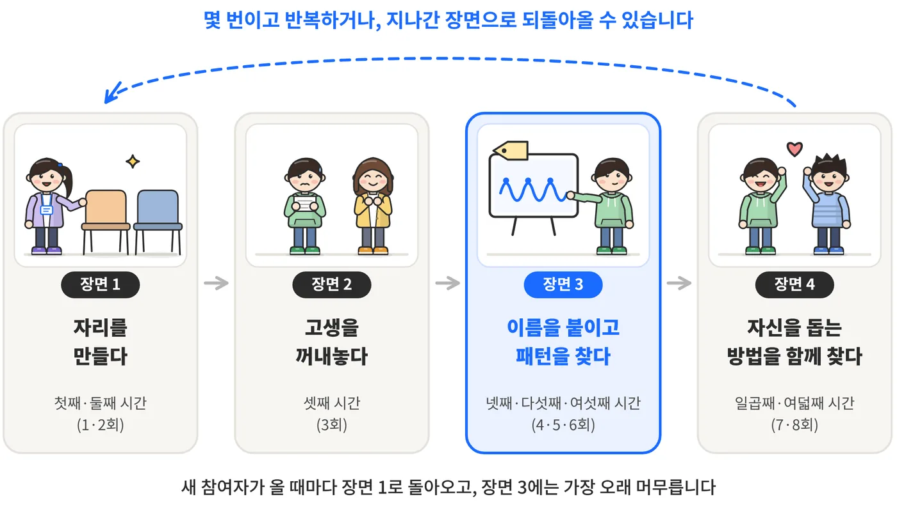

01기관의 질문에서 시작합니다
실무자가 현장에서 실제로 막힌 어려움 하나를 출발점으로 삼습니다.
02연구와 근거를 찾습니다
심사를 거친 논문과 공식 기준을 확인하고, 근거가 충분한 것과 그렇지 않은 것을 구분해 적습니다.
03쓸 수 있는 형태로 돌려 드립니다
원칙, 도구, 문답, 진행 예시처럼 실무자가 바로 펼쳐 쓸 수 있는 형태로 정리합니다.
결과물

2026청주정신건강센터와 함께
당사자연구 안내서
네 장면과 여덟 번의 시간
기관의 질문당사자연구를 우리 센터에 맞게 운영하고, 그 과정을 기록으로 남기고 싶습니다.
정신질환을 겪는 당사자가 자신의 고생을 자신의 말로, 동료와 함께 연구하는 모임을 다른 기관도 따라 해 볼 수 있도록 정리했습니다.
결과물 살펴보기 →
2025청주가경노인복지관과 함께
병식이 없는 정신장애 어르신과 함께 일하기
노인복지관 실무자를 위한 실천 매뉴얼
기관의 질문병식이 없어 도움을 거부하시는 정신장애 어르신을 어떻게 도와야 할까요?
병식을 갖게 하는 법이 아니라, 병식이 없어도 관계와 생활을 지키도록 돕는 법을 근거와 함께 정리했습니다.
결과물 살펴보기 →2027 현장 참여형 실천 매뉴얼 개발 및 연구 지원 사업
함께할 기관을 찾습니다
충청북도 소재 사회복지기관을 대상으로 합니다. 모집 기간은 2026년 11월 16일부터 11월 30일까지이며, 기관이 내는 비용은 없습니다.
두 결과물은 모두 초안 단계이며, 사례와 저작권 확인이 필요한 서식은 공개 범위에서 뺐습니다. 기관에서 활용하고 싶으시거나 궁금한 점이 있으시면 jayb.kim@cbnu.ac.kr로 편하게 연락 주세요.